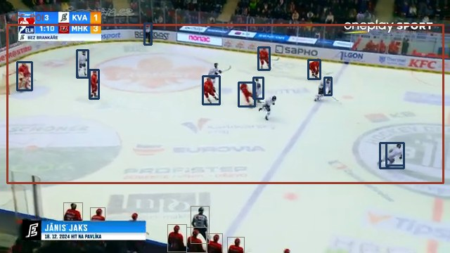
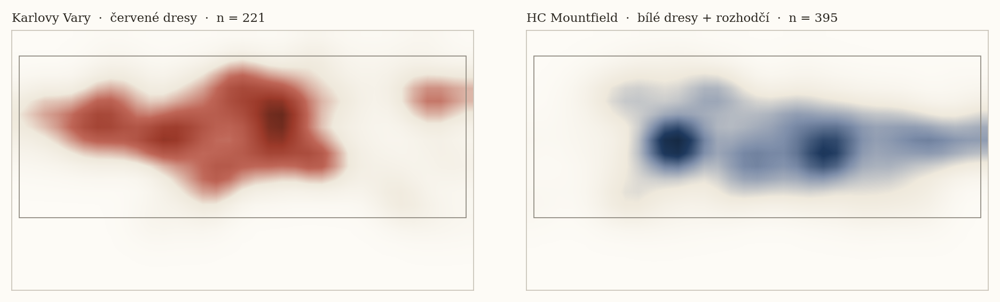
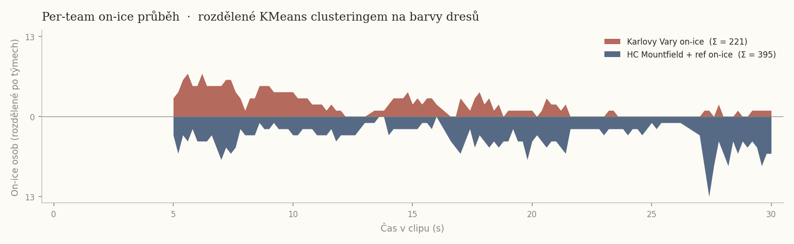

Czech Hockey · hockey intelligence brief · 2025/26
Player Pool Atlas
A structured overview of the Czech professional player pool, read through
a hockey-intelligence lens: data, video and tactical reading in one
methodology. No predictions, no roster recommendations.
1.38*NHL players per million inhabitants, 2025/26 season
Per-capita density of NHL players ranks the Czech pool fifth of six compared countries.
Finland has roughly four times the density,
Sweden five times.
In context
The structural gap is most pronounced among U22 forwards
(a single player) and across the entire defence pipeline
(four players in total; sixty Czech defensemen short of Sweden). Hockey
intuition recognises these numbers player by player, but has no single
place where they are aggregated.
5./6per-capita rank among peer countries
1U22 forward in the NHL FIN 3 · SWE 7
4NHL defensemen in total FIN 14 · SWE 30
* 15 players with birth_country = CZE on 2025/26 NHL rosters (NHL Stats API) ÷ 10.9 M inhabitants (2024 estimate); peer countries computed the same way. Methodology.
Mapped pool
385 players
National-team appearances 24/25
42 players
Data window
2024/25 → 2025/26
A map of roughly 280 Czech hockey players in the world's professional leagues (NHL, Liiga, Tipsport Extraliga), segmented by position and playing profile. A methodological tool for continuous mapping of the player pool across a multi-year national-team cycle, not a selection recommendation.
Structural benchmark vs peer countries
Hockey intuition recognises the Czech pool player by player. Its
structural position among peer countries (FIN, SWE, SVK, CAN, USA), however,
requires a data aggregation that no individual can hold in their
head. Below are three numbers that are typically not collected
in one place.
Per-capita density of NHL players (2025/26 season)
CAN
Canada
8.05
SWE
Sweden
7.17
FIN
Finland
6.07
SVK
Slovakia
1.67
CZE
Czechia
1.38
USA
USA
0.67
The Czech pool ranks fifth of six per capita, between
Slovakia and the USA. The USA has the most NHL players in absolute terms,
but a population of 340 million dilutes its per-capita density to 0.67.
Slovakia (1.67) outranks Czechia despite half the population; Finland's
density is roughly four times higher, Sweden's five times.
Median production (P/GP) by country, position and age group. The blue-outlined
row marks the Czech Republic; each cell shows the number of players and the median points per game.
Specific cohort gaps — forwards
The Czech pool is structurally thin in the younger cohorts. The current NHL elite holds world-class median production, but only four players deep.
Cohort
CZE
FIN
SWE
SVK
U22
10.42
30.24
70.45
40.33
23-25
20.22
90.24
130.32
—
26-29
41.06
80.46
110.40
20.28
30+
50.19
50.47
150.58
—
The Czech U22 forwards cohort = 1 player (Kulich). FIN has 3, SWE 7.
The current 26-29 elite cohort (Pastrňák, Nečas, Zacha, Hertl) holds
a median production of 1.06 P/GP, world class, but only four players deep.
Specific cohort gaps — defensemen
Defensemen are the structurally problematic position across all age groups. Czech NHL defensemen total four; Swedish, thirty.
Cohort
CZE
FIN
SWE
SVK
U22
—
—
50.23
10.38
23-25
10.00
10.27
120.24
—
26-29
10.60
50.18
50.23
20.26
30+
10.23
30.35
80.49
—
CZE has 4 defensemen in the NHL across all age groups.
For comparison: Finland 14, Sweden 30. In the U22 cohort: 0 Czech defensemen.
Forwards atlas 2025/26 in both projections. Acid rings mark the active
national-team pool (WC 24/25). Arrows show the trajectory between seasons.
Observations
The national-team pool spans both the NHL and the Extraliga
42 of the 81 players who played WC 2024 or WC 2025 for the national team are in the mapped pool. They include top NHL players (Pastrňák, Nečas, Vejmelka) as well as Extraliga veterans (Červenka, Sedlák, Kundrátek). Structurally, the national-team pool is therefore neither an “NHL contingent” nor an “Extraliga contingent”: it is the bridge between the two professional ecosystems.
The quality-adjusted map visualises the league differential
Once league multipliers are applied, the NHL elite (Pastrňák PC1 ≈ 8.5) pulls dramatically away from the EU elite (Červenka PC1 ≈ 2). The style map (without multipliers) shows the playing profile alone; there, Pastrňák and Červenka sit in a similar production zone. The pair of projections lets the pool be read both stylistically and qualitatively, without having to pick a single narrative.
Trajectories 2024/25 → 2025/26 reveal stable peaks
Of the 16 players who meet the 30-game minimum in both seasons, the NHL stars show stable top-tier production (Pastrňák Δ ≈ 0). Among the improvers: Zacha and Nečas (both NHL, breakout / post-trade). Among the decliners: Hertl and Palát. These numbers are not predictions; they describe the direction of movement between seasons.
Cluster archetypes — forwards (style projection)
C0
Top-six scorers
18 players · WC pool 8 · median birth year 1996
DPDavid PastrnakMNMartin NecasPZPavel ZachaTHTomas HertlRČRoman Červenka
High goal + assist production, NHL stars (Pastrňák, Hertl, Zacha, Nečas) + EU elite (Mazura). Median birth year 1996.
Tactical readShooting-heavy top-six profile. Statistical footprint consistent with players who generate their own shot from controlled-entry situations and hold PP1 minutes. National-team context: players in this cluster typically carry the first line's offensive load.
C1
Young prospects / depth
122 players · WC pool 9 · median birth year 2001
JKJiri KulichTMTomas MazuraFCFilip ChytilOKOndrej KosJFJakub Frolo *
Low production, median birth year 2001. Mostly Extraliga (112/122). Junior call-ups and young depth players.
Tactical readDevelopment pool. A transitional cluster: the career arc is the decisive signal here, not current stats. For national-team planning over a 4-year cycle, this layer is fund-the-future.
C2
Physical role players
9 players · WC pool 1 · median birth year 1997
AKAdam KlapkaLHLibor HudáčekDLDominik LakatošMSMatúš SukeľOPOndrej Pavel
Markedly high PIM (5-6× the cohort median). Big players: Klapka (NHL prospect), Zohorna, Lakatoš. Mid-to-upper age.
Tactical readPhysical-engagement profile: the high-PIM signal points to third-line / bottom-six minutes with an energy or forecheck role. The cluster does not mix elite production with size; the stylistic separation from scorers is clear.
C3
Veteran two-way
92 players · WC pool 4 · median birth year 1993
RFRadek FaksaTNTomas NosekOPOndrej PalatDKDavid KampfDKDavid Kaše
Median birth year 1994, lower production than C0. A mix of NHL veterans (Palát, Faksa, Nosek, Kampf) and Extraliga regulars.
Tactical readTwo-way / utility middle-six. Players who, in a national-team context, usually hold PK minutes, defensive-zone faceoffs and a structure-of-play role. Stylistic profile between pure scorers and defensive specialists.
Trajectories 2024/25 → 2025/26 (forwards, ≥30 GP in both seasons)
Moving up (Δ quality P/GP)
Player
League
GP 24 / 25
Δ
PZPavel Zacha
nhl
82 / 78
+0.229
MNMartin Necas
nhl
79 / 78
+0.204
RFRadek Faksa
nhl
70 / 58
+0.070
Moving down (Δ quality P/GP)
Player
League
GP 24 / 25
Δ
OPOndrej Palat
nhl
77 / 80
-0.156
THTomas Hertl
nhl
73 / 82
-0.109
AI and multimodal layer below; methodology continues after it
AI & multimodal layer
The applied ML and LLM layer on top of the structured data. Per-player
scout briefs generated by Claude Opus 4.7 from the integrated Atlas
dataset, historical career analogs from a corpus of 1,177 players, plus
a roadmap for modalities the federation currently processes separately
(video, audio).
LLM scout briefs · Claude Opus 4.7
For every player in the pool, Claude Opus integrates cluster placement,
quality-adjusted production, season-over-season trajectory, IIHF
appearances and comparable profiles in the corpus into a structured brief
(written in Czech). Stance discipline (no predictions, no roster
recommendations) is enforced by a system prompt served through prompt
caching. Two briefs are shown below as a sample, a forward and a
defenseman.
David Pastrňák
F, 1996
Statistical profile
Pastrňák falls into style cluster C0 (Top-six scorers) and quality cluster C3, with an extreme position on the production axis PC1 (5.77 style / 8.49 quality). Quality-adjusted P/GP of 1.189 corresponds to a cross-league z-score of +6.50 — an outlier even within the NHL elite in the corpus. His point distribution is heavily assist-weighted (shrunk A/GP 0.833 vs. G/GP 0.356), which places him within C0 closer to a playmaker-forward profile than a pure shooter.
Full brief
Trajectory
Between the 2024-2025 and 2025-2026 seasons P/GP stays practically identical (1.189 → 1.189, Δ -0.001) on a comparable sample (82 → 77 GP). The profile is stable over the multi-season window, with no signal of age-related decline on the production axis nor a structural shift between goal share and assist share.
National-team context
Two IIHF tournaments in the corpus (WC 2024, WC 2025), i.e. confirmed Czech-eligible participation in the current cycle. Within the Czech NT pool he holds the highest position on the production PC1 axis among forwards with NHL data.
Comparable profiles (in-corpus)
Within style cluster C0 the nearest are Martin Nečas (NHL, quality P/GP 1.175, distance 2.197), Lukáš Sedlák (Extraliga, 0.327, 2.235) and Lukáš Jašek (Liiga, 0.362, 2.642). The style map without league multipliers captures structural similarity of the playing profile, which is why Sedlák and Jašek appear despite markedly lower quality-adjusted production.
Caveats
The dataset contains only the NHL source, no EU comparison for this player. Given the extreme coordinates (PC1 quality 8.49), the distance to the nearest neighbours in cluster C0 is large (>2.0), so the "comparable profiles" are nearest only in relative terms — Pastrňák is a structurally isolated outlier in the corpus.
Filip Hronek
D, 1997
Statistical profile
In the 2025-26 season Hronek sits in style cluster C0 (Offensive defensemen) with PCA coordinates (3.35, -0.77), placing him in the right-hand quadrant of the production axis. Quality-adjusted P/GP of 0.558 (NHL multiplier 1.00) is driven mainly by A/GP 0.466; a cross-league z-score of +6.205 puts him well above the mean defenseman in the corpus on P/GP. Quality cluster C3 (PCA quality 7.60, 0.50) corresponds to a production-dominant profile despite the "Young prospects" label — the clustering reflects the age component of PC2.
Full brief
Trajectory
Between 2024-25 and 2025-26 P/GP rose from 0.497 to 0.558 (Δ +0.060) as the sample grew from 61 to 82 GP, classified as stable. The growth is driven more by health stabilisation and higher volume than by a step change in rate stats; the shrinkage effect at 82 GP is minimal (raw 0.598 → shrunk 0.558).
National-team context
One confirmed IIHF appearance (WC 2025), eligibility flag yes. In the Czech NT pool he belongs on the right side of the defence among the profiles with the highest NHL-adjusted P/GP output in the corpus, i.e. in the top layer of offensive defensemen available to the national team.
Comparable profiles (in-corpus)
The three nearest within style cluster C0: Marian Adámek (Extraliga, distance 1.453), Matyas Kantner (Liiga, distance 1.474), Michal Kovařčík (Extraliga, distance 1.535). Distance values of 1.4-1.5 indicate that the nearest match within the same style profile is relatively loose — Hronek's quality-adjusted output isolates him within the NHL contingent, and the comparable style profiles come from lower leagues with markedly lower P/GP.
Caveats
Style clustering does not account for league context, so the comparable profiles include players from the Extraliga/Liiga facing diametrically different quality of opposition; quality cluster C3 is the more relevant benchmark. The dataset contains no shots/GP, TOI or usage split (PP1 vs ES), which for an offensive defenseman limits interpretation of how much production comes from power-play deployment.
Marginal cost ≈ USD 0.04 per brief (Claude Opus 4.7 + adaptive thinking,
effort=high, prompt cache on ~3K tokens of stable system prompt).
The whole Czech pool (78 players) is roughly USD 3 one-off.
Sample briefs in markdown format (Czech):
docs/briefs/
in the repo.
Historical career analogs
For current Czech players the algorithm finds the top 5 nearest historical
analogs in the cached NHL corpus (1,177 players, all nationalities).
Distance is computed from three features at the same age: P/GP (quality-adjusted),
GP, league_quality (z-score normalisation). For each
analog the subsequent trajectory is shown up to 4 seasons ahead.
Description, not prediction: the reader interprets the range
of paths, the method does not impose it.
Target
Jiří Kulich
F · age 21 ·
NHL · 12 GP ·
5 P ·
0.42 P/GP
Cohort N = 542
5 nearest analogs and what followed
1Mike HardmanUSA
NHL · 8 GP · 3 P ·
d = 0.26
What followed:
age 22
AHL · 43GP · 32P
age 23
AHL · 58GP · 18P
age 24
AHL · 63GP · 37P
age 25
AHL · 57GP · 35P
2John HaydenUSA
NHL · 12 GP · 4 P ·
d = 0.36
What followed:
age 22
NHL · 47GP · 13P
age 23
NHL · 54GP · 5P
age 24
NHL · 43GP · 4P
age 25
NHL · 29GP · 5P
3Nicholas RobertsonUSA
NHL · 15 GP · 5 P ·
d = 0.39
What followed:
age 22
NHL · 56GP · 27P
age 23
NHL · 69GP · 22P
age 24
NHL · 78GP · 32P
4Elmer SoderblomSWE
NHL · 21 GP · 8 P ·
d = 0.47
What followed:
age 22
AHL · 61GP · 29P
age 23
AHL · 38GP · 17P
age 24
NHL · 39GP · 3P
5Jack McBainCAN
NHL · 10 GP · 3 P ·
d = 0.51
What followed:
age 22
NHL · 82GP · 26P
age 23
NHL · 67GP · 26P
age 24
NHL · 82GP · 27P
age 25
NHL · 75GP · 25P
Target
David Jiříček
D · age 22 ·
AHL · 24 GP ·
10 P ·
0.42 P/GP
Cohort N = 306
5 nearest analogs and what followed
1Victor ManciniUSA
AHL · 23 GP · 10 P ·
d = 0.08
What followed:
age 23
AHL · 33GP · 12P
2Cam DineenUSA
AHL · 22 GP · 10 P ·
d = 0.17
What followed:
age 23
NHL · 34GP · 7P
age 24
AHL · 50GP · 35P
age 25
AHL · 58GP · 25P
age 26
AHL · 59GP · 43P
3Brett KulakCAN
AHL · 22 GP · 10 P ·
d = 0.17
What followed:
age 23
NHL · 71GP · 8P
age 24
NHL · 57GP · 17P
age 25
NHL · 56GP · 7P
age 26
NHL · 46GP · 8P
4Urho VaakanainenFIN
AHL · 23 GP · 8 P ·
d = 0.24
What followed:
age 23
NHL · 23GP · 2P
age 24
NHL · 68GP · 14P
age 25
NHL · 46GP · 15P
age 26
NHL · 34GP · 6P
5Charles Alexis LegaultCAN
AHL · 24 GP · 8 P ·
d = 0.28
Target
Pavel Zacha
F · age 28 ·
NHL · 78 GP ·
65 P ·
0.83 P/GP
Cohort N = 310
5 nearest analogs and what followed
1Elias LindholmSWE
NHL · 80 GP · 64 P ·
d = 0.15
What followed:
age 29
NHL · 49GP · 32P
age 30
NHL · 82GP · 47P
age 31
NHL · 69GP · 48P
2Max PaciorettyUSA
NHL · 81 GP · 67 P ·
d = 0.17
What followed:
age 29
NHL · 64GP · 37P
age 30
NHL · 66GP · 40P
age 31
NHL · 71GP · 66P
age 32
NHL · 48GP · 51P
3Bo HorvatCAN
NHL · 81 GP · 68 P ·
d = 0.17
What followed:
age 29
NHL · 81GP · 57P
age 30
NHL · 68GP · 57P
4Travis KonecnyCAN
NHL · 77 GP · 68 P ·
d = 0.17
5Pavel BuchnevichRUS
NHL · 80 GP · 63 P ·
d = 0.19
What followed:
age 29
NHL · 76GP · 57P
age 30
NHL · 81GP · 48P
Target
Filip Hronek
D · age 28 ·
NHL · 82 GP ·
49 P ·
0.60 P/GP
Cohort N = 169
5 nearest analogs and what followed
1Shayne GostisbehereUSA
NHL · 82 GP · 51 P ·
d = 0.12
What followed:
age 29
NHL · 52GP · 31P
age 30
NHL · 81GP · 56P
age 31
NHL · 70GP · 45P
age 32
NHL · 55GP · 50P
2Devon ToewsCAN
NHL · 80 GP · 50 P ·
d = 0.17
What followed:
age 29
NHL · 82GP · 50P
age 30
NHL · 76GP · 44P
age 31
NHL · 68GP · 24P
3Mattias EkholmSWE
NHL · 80 GP · 44 P ·
d = 0.26
What followed:
age 29
NHL · 68GP · 33P
age 30
NHL · 48GP · 23P
age 31
NHL · 76GP · 31P
age 32
NHL · 57GP · 18P
4Hampus LindholmSWE
NHL · 80 GP · 53 P ·
d = 0.33
What followed:
age 29
NHL · 73GP · 26P
age 30
NHL · 17GP · 7P
age 31
NHL · 67GP · 26P
5Ryan SuterUSA
NHL · 82 GP · 43 P ·
d = 0.36
What followed:
age 29
NHL · 77GP · 38P
age 30
NHL · 82GP · 51P
age 31
NHL · 82GP · 40P
age 32
NHL · 78GP · 51P
Target
David Pastrňák
F · age 29 ·
NHL · 77 GP ·
100 P ·
1.30 P/GP
Cohort N = 266
5 nearest analogs and what followed
1Ryan Nugent-HopkinsCAN
NHL · 82 GP · 104 P ·
d = 0.31
What followed:
age 30
NHL · 80GP · 67P
age 31
NHL · 78GP · 49P
age 32
NHL · 72GP · 56P
2Jack EichelUSA
NHL · 74 GP · 90 P ·
d = 0.33
3Claude GirouxCAN
NHL · 82 GP · 102 P ·
d = 0.35
What followed:
age 30
NHL · 82GP · 85P
age 31
NHL · 69GP · 53P
age 32
NHL · 54GP · 43P
age 33
NHL · 57GP · 42P
4Nikita KucherovRUS
NHL · 82 GP · 113 P ·
d = 0.40
What followed:
age 30
NHL · 81GP · 144P
age 31
NHL · 78GP · 121P
age 32
NHL · 76GP · 130P
5Sidney CrosbyCAN
NHL · 75 GP · 89 P ·
d = 0.40
What followed:
age 30
NHL · 82GP · 89P
age 31
NHL · 79GP · 100P
age 32
NHL · 41GP · 47P
age 33
NHL · 55GP · 62P
The reference set consists only of players in the cached NHL landing endpoints
(mostly active 2024/25-2025/26 rosters). Pre-2000 retirees (Jágr, Hejduk, Hašek,
Reichel, Sýkora) are missing in this version. A production-grade pipeline
would add them via hockey-reference scraping; this session demonstrates the principle
on the available data.
A synthesis view over the existing layers: for every player in the showcase
pool (NHL elite F+D, mid-cycle F, U22 prospects F+D) one integrated card
combining cluster placement (style + quality), tactical read, year-over-year
trajectory, top 3 historical analogs at the same age, and an excerpt from
the LLM scout brief. For a federation analytics team this layer is
operational: everything the public data says about a
player, on one screen.
88BOS
David Pastrňák
F · age 30 · NHL
· WC 24/25 ×2
P/GP quality
1.19
z-score
+6.50
GP / P
77 / 100
styleC0Top-six scorersqualityC3EU veterans
Tactical read
Shooting-heavy top-six profile. Statistical footprint consistent with players who generate their own shot from controlled-entry situations and hold PP1 minutes. National-team context: players in this cluster typically carry the first line's offensive load.
Trajectory 24/25 → 25/26
Δ -0.001 P/GPstable82 GP → 77 GP
Historical analogs @29
Ryan Nugent-HopkinsCAN
NHL · 82 GP · 104 P ·
d = 0.31
Jack EichelUSA
NHL · 74 GP · 90 P ·
d = 0.33
Claude GirouxCAN
NHL · 82 GP · 102 P ·
d = 0.35
LLM brief excerpt
Pastrňák falls into style cluster C0 (Top-six scorers) and quality cluster C3, with an extreme position on the production axis PC1 (5.77 style / 8.49 quality). Quality-adjusted P/GP of 1.189 corresponds to a cross-league z-score of +6.50 — an outlier even within the NHL elite in the corpus. His point distribution is heavily assist-weighted (shrunk A/GP 0.833 vs.…
88COL
Martin Nečas
F · age 27 · NHL
· WC 24/25 ×2
P/GP quality
1.18
z-score
+6.41
GP / P
78 / 100
styleC0Top-six scorersqualityC3EU veterans
Tactical read
Shooting-heavy top-six profile. Statistical footprint consistent with players who generate their own shot from controlled-entry situations and hold PP1 minutes. National-team context: players in this cluster typically carry the first line's offensive load.
Trajectory 24/25 → 25/26
Δ +0.204 P/GPimproving79 GP → 78 GP
LLM brief excerpt
Nečas falls into style cluster C0 (Top-six scorers) with an extreme position on the production axis — PCA style coordinates (5.46, -0.04) and quality (8.52, -0.27) place him among the most pronounced scoring profiles in the corpus. Quality-adjusted P/GP of 1.175 (G/GP 0.454, A/GP 0.721) with a cross-league z-score of +6.414 means more than six standard deviations above…
Power-play QB / puck-moving D profile. A/GP dominates over G/GP; the statistical footprint matches first-pair offensive defensemen with a breakout-control role. The value is realised in teams with a perimeter-heavy PP structure.
Trajectory 24/25 → 25/26
Δ +0.060 P/GPstable61 GP → 82 GP
Historical analogs @28
Shayne GostisbehereUSA
NHL · 82 GP · 51 P ·
d = 0.12
Devon ToewsCAN
NHL · 80 GP · 50 P ·
d = 0.17
Mattias EkholmSWE
NHL · 80 GP · 44 P ·
d = 0.26
LLM brief excerpt
In the 2025-26 season Hronek sits in style cluster C0 (Offensive defensemen) with PCA coordinates (3.35, -0.77), placing him in the right-hand quadrant of the production axis. Quality-adjusted P/GP of 0.558 (NHL multiplier 1.00) is driven mainly by A/GP 0.466; a cross-league z-score of +6.205 puts him well above the mean defenseman in…
18BOS
Pavel Zacha
F · age 29 · NHL
· WC 24/25 ×1
P/GP quality
0.78
z-score
+3.90
GP / P
78 / 65
styleC0Top-six scorersqualityC3EU veterans
Tactical read
Shooting-heavy top-six profile. Statistical footprint consistent with players who generate their own shot from controlled-entry situations and hold PP1 minutes. National-team context: players in this cluster typically carry the first line's offensive load.
Trajectory 24/25 → 25/26
Δ +0.229 P/GPimproving82 GP → 78 GP
Historical analogs @28
Elias LindholmSWE
NHL · 80 GP · 64 P ·
d = 0.15
Max PaciorettyUSA
NHL · 81 GP · 67 P ·
d = 0.17
Bo HorvatCAN
NHL · 81 GP · 68 P ·
d = 0.17
LLM brief excerpt
Zacha falls into style cluster C0 (Top-six scorers) with PCA coordinates (3.02, -0.43) and in the quality-adjusted projection sits at PC1 = 5.41, placing him among the corpus's NHL elite. Quality-adjusted P/GP of 0.777 (G/GP 0.363, A/GP 0.415) corresponds to a cross-league z-score of +3.90 — one of the highest values in the whole dataset. Style…
20BUF
Jiří Kulich
F · age 22 · NHL
· WC 24/25 ×1
P/GP quality
0.38
z-score
+1.41
GP / P
12 / 5
styleC1Young prospects / depthqualityC4EU young / depth
Tactical read
Development pool. A transitional cluster: the career arc is the decisive signal here, not current stats. For national-team planning over a 4-year cycle, this layer is fund-the-future.
Historical analogs @21
Mike HardmanUSA
NHL · 8 GP · 3 P ·
d = 0.26
John HaydenUSA
NHL · 12 GP · 4 P ·
d = 0.36
Nicholas RobertsonUSA
NHL · 15 GP · 5 P ·
d = 0.39
LLM brief excerpt
Kulich falls into style cluster C1 (Young prospects / depth) and quality cluster C4 (EU young / depth), with PCA coordinates style (0.03, 0.37) and quality (1.98, 0.10) — his right-hand position on the production axis sets him apart from most of the C4 cohort thanks to the NHL multiplier. After Bayesian shrinkage (K=10) his…
5PHI
David Jiříček
D · age 23 · NHL
P/GP quality
0.06
z-score
-0.31
GP / P
26 / 0
styleC2Young depth DqualityC4Depth
Tactical read
Development blue-line pool. AHL/Extraliga call-up volume, NHL prospects. A transitional cluster: for most, a top-pair NHL ceiling is an open question, not a current statement.
Historical analogs @22
Victor ManciniUSA
AHL · 23 GP · 10 P ·
d = 0.08
Cam DineenUSA
AHL · 22 GP · 10 P ·
d = 0.17
Brett KulakCAN
AHL · 22 GP · 10 P ·
d = 0.17
Every card is a render of the existing dataset — no new computation
beyond the synthesis. A production deployment of this layer would include
interactive filters (age, position, league, IIHF eligibility), a per-player
history sparkline, and the fully generated brief embedded in an expandable detail.
Video tracking and tactical platform
The tracking + event detection + tactical dashboards pipeline is in active
development as a general-purpose framework in a parallel sporting context
(a different professional sport, a client outside the hockey Extraliga).
The architecture is sport-agnostic: broadcast video →
YOLOv8 / RT-DETR player + object detection →
per-frame coords in field/rink coordinates →
event detection (passes, shots, zone entries) →
tactical dashboards.
For an Extraliga application this means transfer learning on the existing
stack and solving access to broadcast video, not developing CV technology
from scratch.
Proof of concept in a hockey context (produced for this report):
a 30-second publicly available Tipsport Extraliga highlight (2024/25 season,
Karlovy Vary vs HC Mountfield) was processed by a pretrained YOLOv8n model
(COCO-trained, no hockey-specific fine-tuning). A sample of 21 frames out
of 751, detecting class 0 (person, a proxy for skaters + referees) and
class 32 (sports ball, a proxy for the puck).
Real PoC · YOLOv8n on 30 s of Extraliga broadcast

Frame 185 · 6 KVA (oxblood) +
6 MHK / ref (navy) = balanced 5v5 + referees on the ice

Per-team heatmaps · KVA n=221 vs MHK+ref n=395 across 151 frames
(5 fps sample), split by torso HSV clustering

Sample density
5 fps / 151 frames
On-ice / frame
4.1 persons
Off-ice filtered
32.9 % of detections
Karlovy Vary (red)
221 detections
HC Mountfield + ref
395 detections
Inference / frame
18.3 ms (CPU)
What this layer adds · 3 notes
What this layer adds over bare detection: a dense sample
(5 fps, 151 frames from 30 s), an ICE ROI filter (removes 32.9 % of junk
bench and crowd detections), and a per-team colour split (a KMeans-like
rule over torso HSV: high saturation in the red hue range → Karlovy
Vary, everything else → MHK / referees). Frame 185 (wide angle,
5v5 + ref): balanced 6 KVA + 6 MHK = correct call. The per-team heatmaps
show where each team spent its time on the ice within the 30 s sample
— a tactical signal that commercial trackers produce, but only for
the NHL; for the Extraliga, Liiga and SHL this layer is a gap in the market.
0 puck detections and the fixed-rectangle ICE ROI are two
expected PoC floors: in a 640×360 broadcast the puck is ~1-2 px in
diameter against COCO "sports ball" training on 30-60 px balls; the ROI
rectangle is a crude approximation, the production move is a per-frame
perspective homography from fixed rink markers (blue/red lines, faceoff
circles → pixel-to-metre conversion in rink coords, with the ROI
computed automatically from the polygon). A hockey-specific fine-tune of
the detector on an annotated puck dataset (Roboflow public sets or
in-house labelling) removes both defaults.
What this layer adds for a video coach over a commercial tracker:
Sportlogiq and InStat cover the NHL fully, the Extraliga patchily and
expensively. This pipeline runs on CPU in real time (~55 fps on the
pretrained model), with no per-game licences; a federation or club adapts
it to its own tactical vocabulary. Concretely, what this enables for a
video analyst: auto-pre-tagging of clips (zone entry, forecheck
attempt, faceoff, line change) — the coach then only verifies
instead of tagging from scratch; search-and-retrieve (“show
me all KVA zone entries from the left side with controlled puck”);
per-line heatmaps (which line holds the puck where vs just
cycles); opponent tendency reports cross-game (“Mountfield
PP1 enters on the left 67 % of the time”); real-time alerts
(“the opponent just switched to a 1-3-1 PK box”). Detection is
the primitive layer; the tactical platform is the classification,
retrieval and alerting layer on top of detection.
Planned · media buzz index from Czech hockey podcasts
Czech hockey discourse largely takes place in podcasts (Hokejka,
Češi v NHL, Slovenský hokej, regional). Planned pipeline:
RSS feed scrape →
Whisper-large-v3 transcription in Czech →
NER on player names →
sentiment and topic extraction →
buzz time series per player. A signal the federation currently
has no systematic version of: media momentum and the narrative
around players as a complement to the statistical trajectory.
Sample output · illustration on mock data
Sample pipeline output: monthly buzz score (number of mentions × sentiment)
for 4 players. The real pipeline would draw on Whisper-large-v3 transcriptions,
with NER extracting mentioned-by-name. The data here is illustrative.
Not currently implemented.
Methodology
Data sources
NHL Stats API (api-web.nhle.com/v1): all active 2024/25 and 2025/26 NHL players, filter birth_country = CZE
MoneyPuck: 5v5 per-60 metrics and xG (NHL-only enrichment)
Liiga (liiga.fi): season totals via Playwright
Tipsport Extraliga (hokej.cz): per-team /statistiky, birth dates from /hrac/ profiles
IIHF tournaments (Wikipedia: WC 2024, WC 2025, WJC 2024, WJC 2025): national-team appearances for the eligibility filter
League multipliers (quality projection)
P/GP_quality = P/GP_shrunk × m_league
League
Multiplier
nhl
1.00
ahl
0.55
shl
0.45
liiga
0.42
nl
0.40
extraliga
0.35
cz1l
0.20
Subjective approximations inspired by public comparisons of the production of players moving between leagues
(hockeyviz.com, Sznajder NHL-equivalency analyses). The sensitivity analysis below shows robustness to ±20 %.
Bayesian shrinkage
Per-game production of players with a small sample (GP < 10) is shrunk towards their
league median using the empirical Bayes formula:
shrunk_rate = (event_count + K × cohort_median) / (player_GP + K), K = 10
At GP = 1 the cohort median dominates (~91 %); at GP = 80 the actual data dominates (~89 %).
Without shrinkage a player like Lantoši (4 GP, 5 points, 1.25 P/GP raw) would overtake Pastrňák in quality.
After shrinkage he drops to 0.59 P/GP, which is methodologically defensible.
PCA loadings
Loadings table
Position
Projection
PC
% variance
G/GP
A/GP
PIM/GP
age
D
quality
PC1
41.4%
0.706
0.702
-0.064
0.067
D
quality
PC2
27.1%
0.019
0.113
0.714
-0.691
D
style
PC1
35.8%
0.666
0.643
-0.376
0.041
D
style
PC2
26.5%
-0.120
-0.226
-0.509
0.822
F
quality
PC1
46.2%
0.699
0.703
0.083
-0.103
F
quality
PC2
25.0%
-0.069
0.024
0.904
0.422
F
style
PC1
42.6%
0.658
0.673
0.226
-0.250
F
style
PC2
25.3%
-0.128
0.093
0.774
0.613
Sensitivity analysis (±20 % multipliers)
For each multiplier-perturbation scenario the quality ranking was recomputed and the change against the baseline measured.
The top-10 ranking is stable under these changes: no scenario causes churn greater than 1 player.
The NHL top elite (Pastrňák, Nečas, Zacha, Hertl) stays in the top four in all scenarios.
Scenario table
Scenario
Description
Top-10 overlap
Top-10 churn
Mean Δ rank (top 20)
baseline
current multipliers from config
10 / 10
0
0.00
liiga_minus20
liiga multiplier −20%
9 / 10
1
4.35
liiga_plus20
liiga multiplier +20%
9 / 10
1
1.90
extraliga_minus20
extraliga multiplier −20%
9 / 10
1
1.30
extraliga_plus20
extraliga multiplier +20%
10 / 10
0
2.50
all_minus20
every league multiplier −20%
10 / 10
0
0.00
all_plus20
every league multiplier +20%
10 / 10
0
0.00
Defensemen atlas
Defensemen atlas 2025/26. Same interpretation as for the forwards.
Cluster details — defensemen
C0
Offensive defensemen
15 players · WC pool 3 · median birth year 1997
FHFilip HronekMAMarek AlscherMJMichal JordanMAMarian AdámekJGJakub Galvas
Higher A/GP (0.29), playmaking from the blue line. Hronek (NHL), Jordan (Liiga), Alscher, Kaňák.
Tactical readPower-play QB / puck-moving D profile. A/GP dominates over G/GP; the statistical footprint matches first-pair offensive defensemen with a breakout-control role. The value is realised in teams with a perimeter-heavy PP structure.
C1
Physical veterans
10 players · WC pool 1 · median birth year 1995
RGRadko GudasPŠPetr ŠenkeříkTDTomáš DvořákJJJanis JaksTBTomáš Bartejs
Gudas (NHL), Pláněk, Šenkeřík. Low production, higher PIM. The pivot of the defensive style.
Tactical readTop-shutdown / matchup-pair profile. The high-PIM signal correlates with physical engagement in defensive-zone work. A cluster of pure defensive D, often matched against the opposing top six.
C2
Young depth D
42 players · WC pool 6 · median birth year 2001
MHMikulas HovorkaOTOndrej TrejbalRPRayen PetrovickýFKFilip KrálDMDavid Moravec
Median birth year 2001, mostly Extraliga. Jiříček (NHL prospect), Hovorka, Trejbal, Hájek.
Tactical readDevelopment blue-line pool. AHL/Extraliga call-up volume, NHL prospects. A transitional cluster: for most, a top-pair NHL ceiling is an open question, not a current statement.
C3
Veteran point producers
5 players · WC pool 3 · median birth year 1992
JTJiri TichacekJKJakub KrejčíkTKTomáš KundrátekRŠRadim ŠimekDŠDavid Škůrek
Tichaček, Kundrátek, Krejčík. Higher A (0.29), older (1992). Grey-haired playmakers from the blue line.
Tactical readPP2 utility / experienced offensive D. A continuity-of-system role, often the link between young top-pair D and defensive shutdown players. In a national-team context they hold the familiar scheme.
C4
Two-way mid-age
13 players · WC pool 3 · median birth year 2000
RKRadek KucerikTCTomáš CibulkaMTMiguël TourignySHSamuel Huzevka *LZLibor Zábranský
Balanced profile, median birth year 2000.
Tactical readBottom-pair / depth blue-line profile. A balanced statistical footprint without specialisation; the cluster where the distinction between role types blurs. Utility value depends on team context.
C5
Defensive depth
43 players · WC pool 0 · median birth year 1993
FPFilip PavlíkAPAdam PolášekAJAdam JánošíkPDPatrik DemelARAlex Rašner
The sixth category: typically very young or strongly defensive.
Tactical readAHL/junior reserves or strongly defensive-only D. A cluster outside active NHL minutes; the relevance is organisational depth, not a current role.
Limitations of this analysis
Public versus internal data
This analysis uses exclusively publicly
available statistical sources (NHL API, MoneyPuck, Liiga, hokej.cz, Wikipedia for IIHF tournaments).
The coaching and management staff of the Czech national team has internal data (video breakdown,
conditioning tracking, scouting reports, micro-stats on zone entries and controlled exits)
that this method does not take into account. The patterns identified here are hypotheses
for internal validation, not conclusions.
League quality multipliers
The league quality multipliers used (NHL = 1.00, AHL = 0.55,
SHL = 0.45, Liiga = 0.42, NL = 0.40, Extraliga = 0.35, 1st league = 0.20) are subjective
approximations. They are based on public comparisons of the production of players who moved
between leagues, but are sensitive to player selection, rule differences, rink size and seasonal
context. The sensitivity analysis (Methodology section) shows how the map changes when a multiplier
shifts by ±20 %: the top-10 ranking is stable under these perturbations (churn 0-1 players).
No KHL data
The KHL is excluded from the analysis for two reasons: political
sanctions limit the usability of Russian statistical sources, and data quality has recently been
unverifiable. Czech players in the KHL are not captured in this version of the map.
Sample size and Bayesian shrinkage
Some players have played fewer than 10
games in the 2025/26 season. Per-game metrics for these players were shrunk towards their league
median (empirical Bayes, K = 10 phantom games). The trajectory analysis requires a minimum of
30 games in both seasons (16 players qualify).
Goaltending
Goalies are excluded from the main map because their
position-specific metrics do not allow a joint projection with forwards and defensemen.
Goaltending analytics is extremely context-dependent (quality of the defence in front of the
goalie, ice conditions, game scheme) and this analysis claims no depth in that area.
Missing sources
The SHL and the Swiss NL are excluded from this version of
the map; both sites are JavaScript-rendered with non-trivial data access. The Czech pool in these
leagues (~10-20 players) is therefore missing from this version. AHL players, NCAA and junior
leagues outside the Extraliga and Liiga are also out of scope.
Style ≠ tactical understanding
A player's statistical footprint does not
capture the ability to read the game, leadership, dressing-room influence, or specific skills
for international tournaments (e.g. playing on the big ice after a long NHL season). That is
the domain of coaches and scouting.
No recommendations
This analysis identifies statistical groupings and changes
over time. Player selection and strategic decisions require integration with internal expertise
that this method does not have. The aim is to offer a method the internal team can apply to its
own extended data base.
Reproducibility
The full pipeline is public: github.com/sandovabarbora/czehockey-player-pool-atlas.
MIT licence. Run with make install && make install-browsers && make all.
Random seed = 42 for all stochastic operations (KMeans, UMAP).